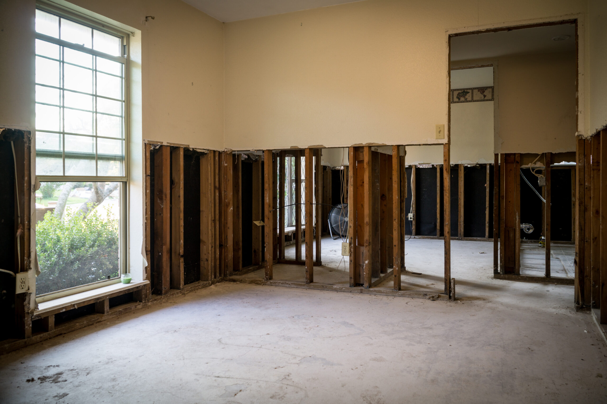

How much will water damage cost if you wait too long to fix it? That’s one of the biggest concerns homeowners have after discovering flooding, burst pipes, ceiling leaks, or standing water inside their property. The truth is that water damage repair costs can increase rapidly when moisture spreads into drywall, flooring, insulation, and structural materials. Fast professional water damage restoration not only protects your home—it can also save thousands in long-term repairs.
Water damage is one of the most common and expensive property issues homeowners face. From small plumbing leaks to major storm flooding, every situation is different, which means repair costs can vary widely. Understanding what affects pricing helps homeowners make informed decisions and avoid delays that could lead to mold growth, structural damage, and higher restoration bills.
The average cost of water damage repair depends on the size of the affected area, the type of water involved, and how long the moisture has been present. Minor damage from a small leak may cost a few hundred dollars, while severe flooding can lead to repairs costing several thousand dollars or more.
Most professional water damage restoration services include:
The faster restoration begins, the more likely it is that materials can be saved instead of replaced. Immediate response often lowers overall costs significantly.
Several important factors determine how much water damage cleanup and restoration will cost.
A small leak affecting one room is far less expensive than flooding that impacts multiple rooms or levels of a home. The more materials exposed to moisture, the more extensive the restoration process becomes.
Water can quickly spread into:
Larger affected areas require additional drying equipment, labor, and repairs.
The category of water involved plays a major role in restoration pricing.
Clean water from a plumbing leak is typically less expensive to handle than contaminated water from sewage backups or storm flooding. Contaminated water requires specialized cleaning, sanitization, and disposal procedures to protect health and safety.
Professional emergency water removal services ensure contaminated areas are handled correctly and safely.
The longer water sits, the more damage it causes. Moisture trapped behind walls or under flooring often leads to swelling, warping, and mold growth.
Mold can begin forming within 24 to 48 hours, which may require additional mold remediation services alongside water damage restoration. Delayed cleanup almost always increases repair costs and restoration timelines.
One of the first steps in restoration is removing standing water. Professional water extraction services use industrial pumps and vacuums to remove water quickly before it spreads further into the property.
Emergency response pricing depends on:
Fast extraction is critical because it limits structural damage and reduces the likelihood of mold contamination later.
Even after visible water is removed, hidden moisture remains inside walls, flooring, and structural materials. Professional drying equipment is necessary to fully restore safe moisture levels.
Industrial air movers and dehumidifiers typically remain in place for several days while technicians monitor moisture readings. The size of the affected area and the number of drying units required affect the overall cost.
Proper structural drying services are essential because trapped moisture can continue causing damage long after surfaces appear dry.
One of the biggest hidden expenses associated with water damage is mold growth. If moisture is not removed quickly and completely, mold can spread behind walls, under flooring, and into insulation.
Professional mold remediation may include:
Addressing mold early helps reduce repair costs and protects indoor air quality for your family.
Many homeowners insurance policies cover sudden and accidental water damage, such as burst pipes or appliance failures. However, coverage depends on the source of the damage and the details of the policy.
Insurance may help pay for:
Long-term leaks or neglected maintenance issues may not be covered. Professional restoration companies often assist homeowners by documenting damage and working directly with insurance providers during the claims process.
Some homeowners attempt DIY cleanup to reduce costs, but incomplete drying often creates bigger problems later. Hidden moisture can weaken structural materials and lead to extensive mold growth that requires far more expensive repairs.
Professional water damage restoration companies use moisture meters, thermal imaging, and industrial drying equipment to locate hidden water and restore the property correctly the first time.
Fast professional response minimizes long-term damage, shortens recovery time, and helps preserve more of the home’s original materials.
Quick action is the best way to control restoration expenses. Homeowners can help minimize damage by:
Routine plumbing inspections and roof maintenance can also help prevent future water damage events.
When you need professional help restoring your home after water damage, S.W.A.T. Restoration is ready to respond. Our team provides expert water damage restoration, emergency water extraction, structural drying, and complete repair services designed to protect your property and reduce long-term costs. We respond quickly, use advanced restoration equipment, and help guide you through the insurance process from start to finish.
If your home has experienced flooding, leaks, or storm damage, don’t wait for repair costs to rise. Contact S.W.A.T. Restoration today for fast, reliable restoration services you can trust.